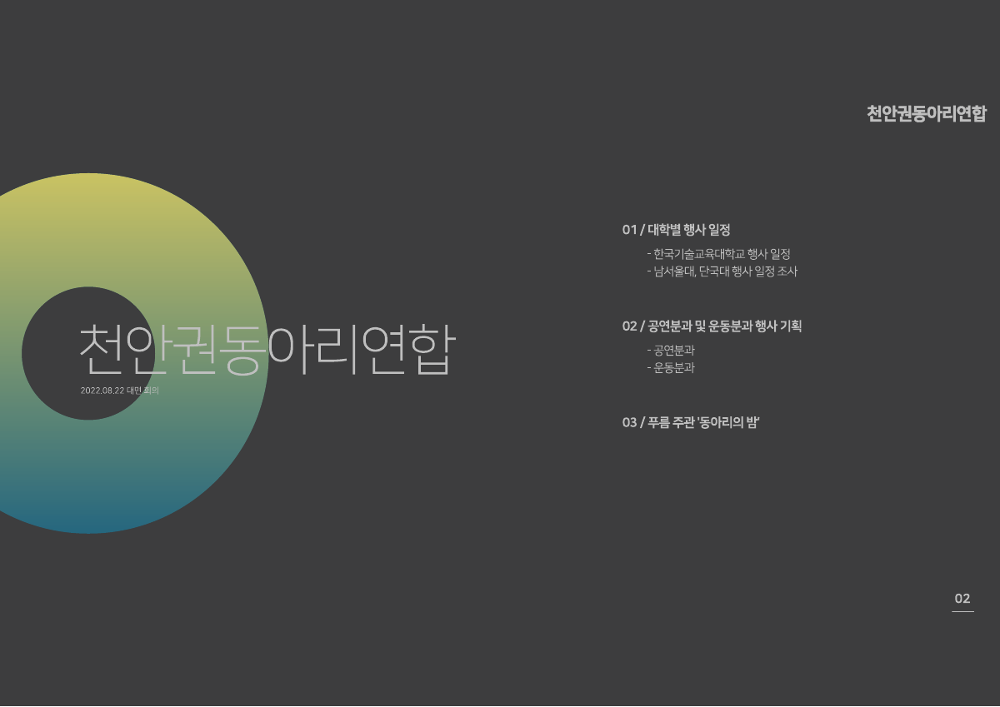
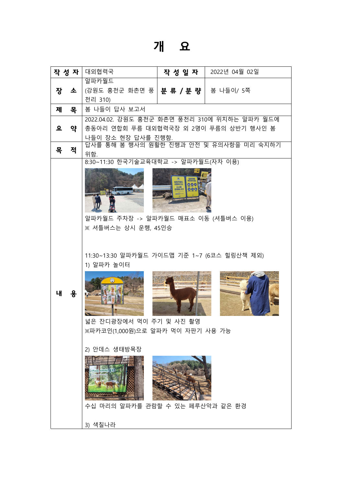
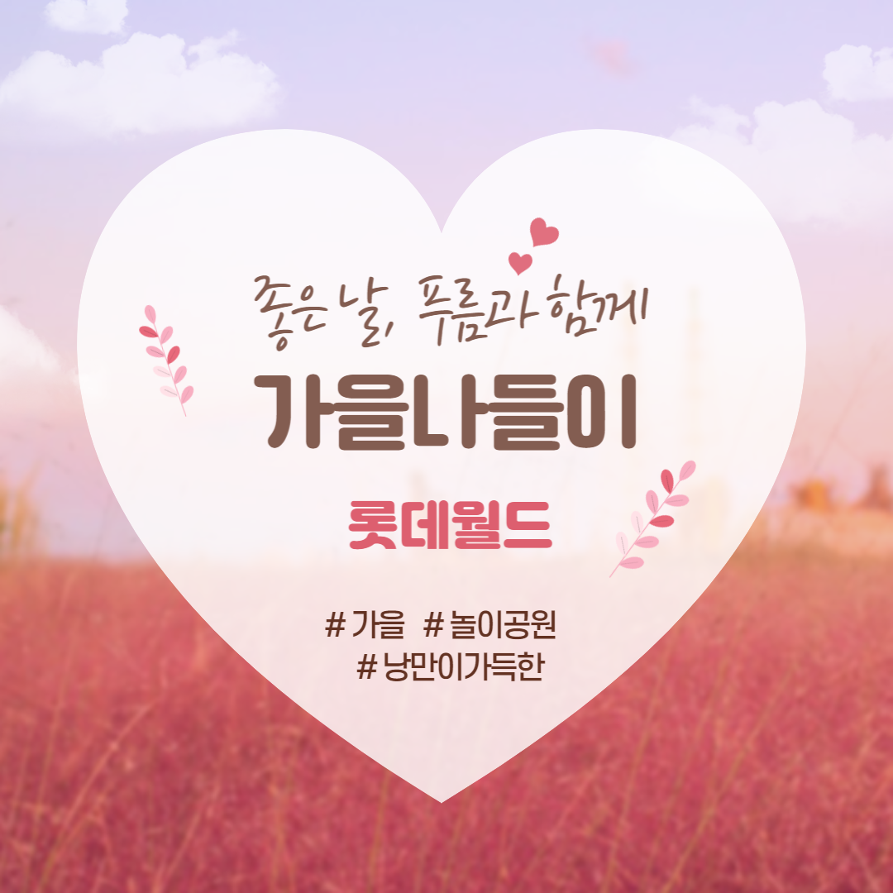
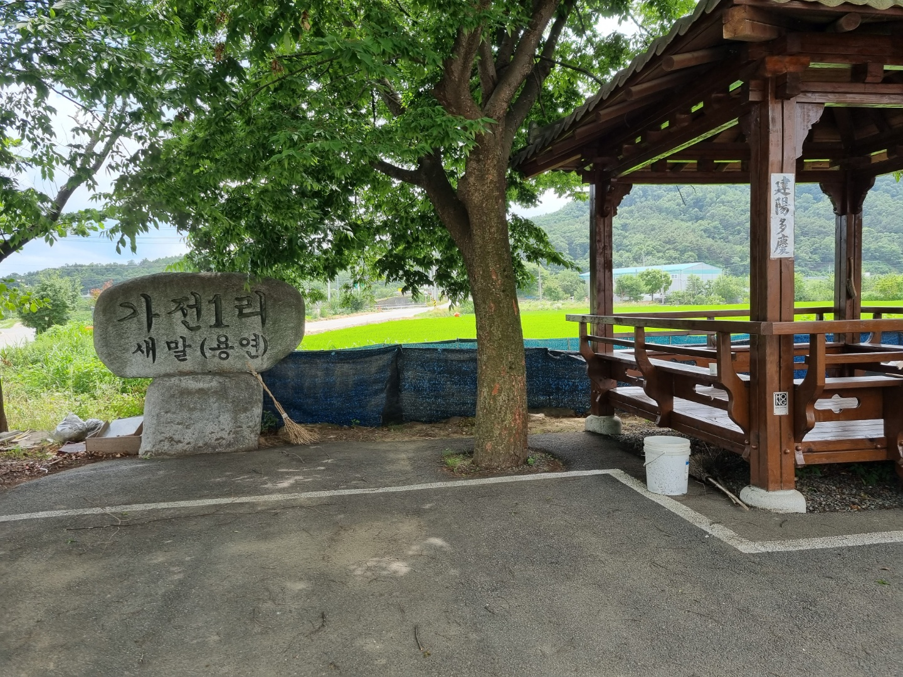

← ActivitiesSTUDENT ASSOCIATION
제29대 총동아리연합회 · 푸름
총동아리연합회
대외협력국장
2년간의 공백 이후, 대외협력국의 업무 기반을 다시 만들고
국원·동아리·교내 부서·타 대학을 연결했습니다.
- 활동 기간
- 2021.11 ~ 2022.10
- 역할
- 대외협력국장 · 조직 운영
ORGANIZATION
운영 기반 재구축
코로나 이후 총동아리연합회가 2년간 부재해 인수인계자·과거 데이터·문서 양식이 없는 상황에서 업무 기반을 다시 정리했습니다.
- 국원들과 주간 업무보고, 회의 안건·대본·회의록, 행사 기획안, 견적·예산표, 신청서·서약서 등 운영 문서 정리
- 분과별 담당자를 배치하고 진행 상황 관리
UNIVERSITY EXCHANGE
천안권 대학 간 협력
천안권 9개 대학의 현황을 조사하고, 본교·단국대학교 천안캠퍼스·남서울대학교가 참여한 4차례 회의를 통해 협력 기반을 마련했습니다.
- 상대 대학의 예산·인력·장소 부담 확인
- 본교의 지원 가능 조건과 추가 협의 의지를 설명하며 참여 조건 조율
EVENT PLANNING
동아리 학생 나들이 운영
- 나들이 장소 조사와 답사, 행사 기획 및 운영 준비
- 예산 부족 상황에서 배정 상황·기존 지원 안내·행사 대상 차이를 근거로 학생지원팀장과 협의
- 추가 예산을 확보하고 행사 실행
VOLUNTEERING & FESTIVAL
농촌봉사·축제 준비
- 병천면 농촌봉사활동 기획과 장소 조사, 참가 신청 및 물품 지원 준비
- 축제 기획 보조 및 타 대학 공연 동아리의 참여 조건 협의
선례가 없는 환경에서 업무 기준을 세우고, 여러 관계자와 기획·설득·협업하는 경험을 쌓았습니다.
활동 자료
회의 · 답사 · 행사 홍보







